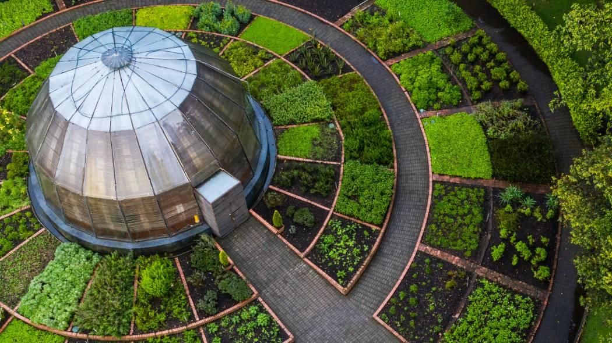
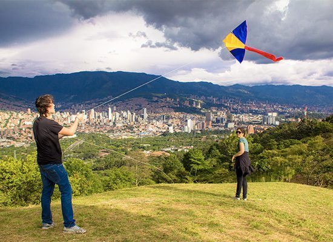
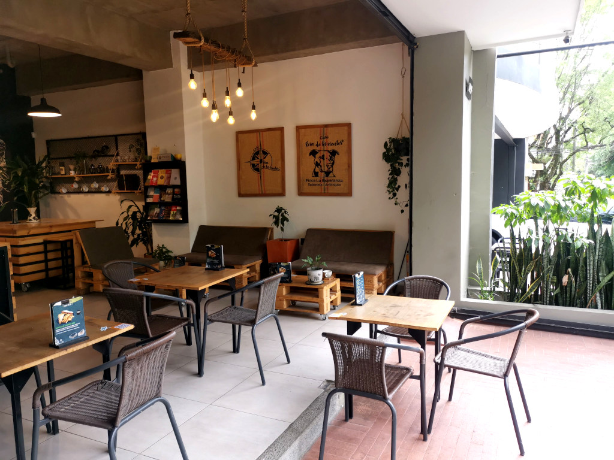
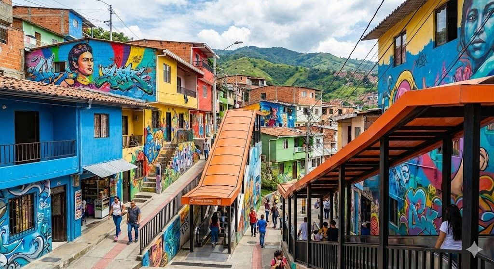
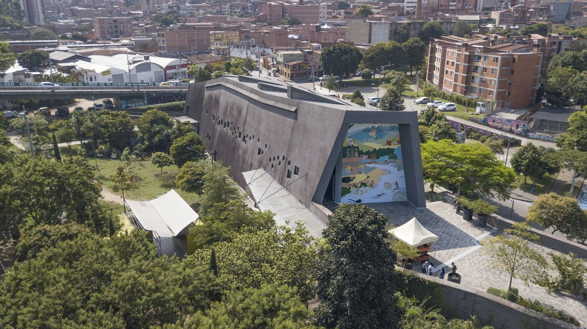
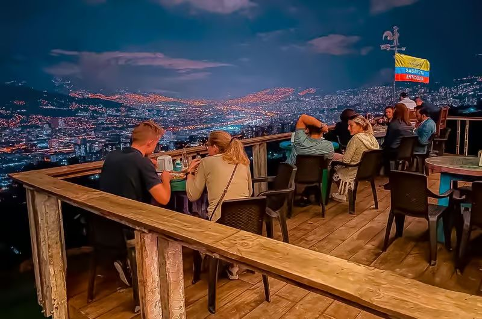
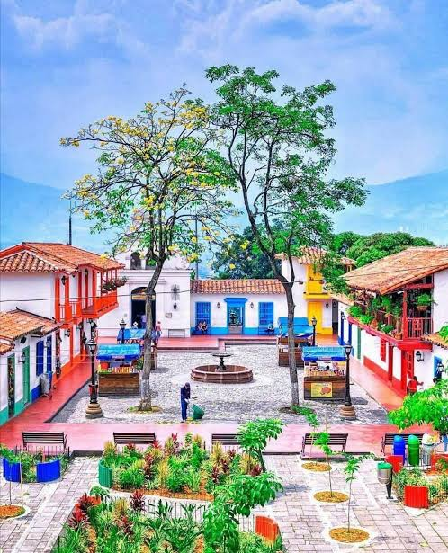
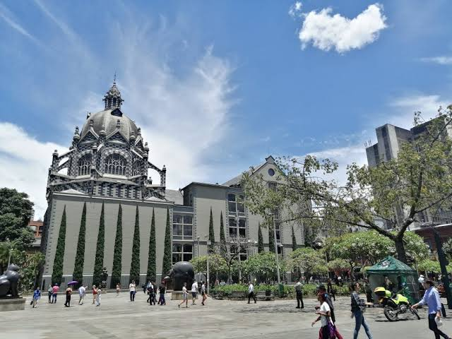

Jardín Botánico
Sevilla
Un oasis verde en el centro de la ciudad, con orquidiario, lago y senderos para caminar.
- Entrada libre
- Ideal en familia
- Fotografía
Medellín tiene lugares que todavía no conoces. Descubre sitios para visitar y encuentra tu próximo plan.
No encontramos lugares con ese nombre. Prueba con otra palabra.
Parques, jardines, bosques y espacios verdes para descansar y disfrutar del aire libre.

Sevilla
Un oasis verde en el centro de la ciudad, con orquidiario, lago y senderos para caminar.

Santa Elena
Reserva natural en las montañas, a la que se llega en Metrocable, con caminatas y mercado campesino.

Robledo
Cerro con bosque y senderos que ofrece una vista amplia del valle de Aburrá.
Cafés especiales, espacios acogedores y lugares para compartir.

Laureles
Cafés especiales y espacios acogedores para compartir en un barrio tranquilo.

El Poblado
Cafés con buen ambiente para encontrarse con amigos o trabajar un rato.
Manila, El Poblado
Cafés con carácter en una de las zonas más animadas de El Poblado.
Museos, murales, galerías, arte urbano y espacios históricos.

San Javier
Barrio transformado por el arte urbano, con murales, grafitis, música y escaleras eléctricas.

Boston
Espacio que reconoce las historias del conflicto en Colombia y promueve la reflexión y la paz.
Lugares para contemplar Medellín desde las alturas y disfrutar de sus paisajes.

Vía Las Palmas
Paradas a lo largo de la vía con vistas de Medellín desde las alturas.
Lugares emblemáticos que permiten conocer la historia y las tradiciones de la ciudad.

Cerro Nutibara
Réplica de un pueblo antioqueño tradicional, con plaza, iglesia y vista a la ciudad.

Centro
Plazas, edificios y esculturas, como la Plaza Botero, que cuentan la historia de la ciudad.